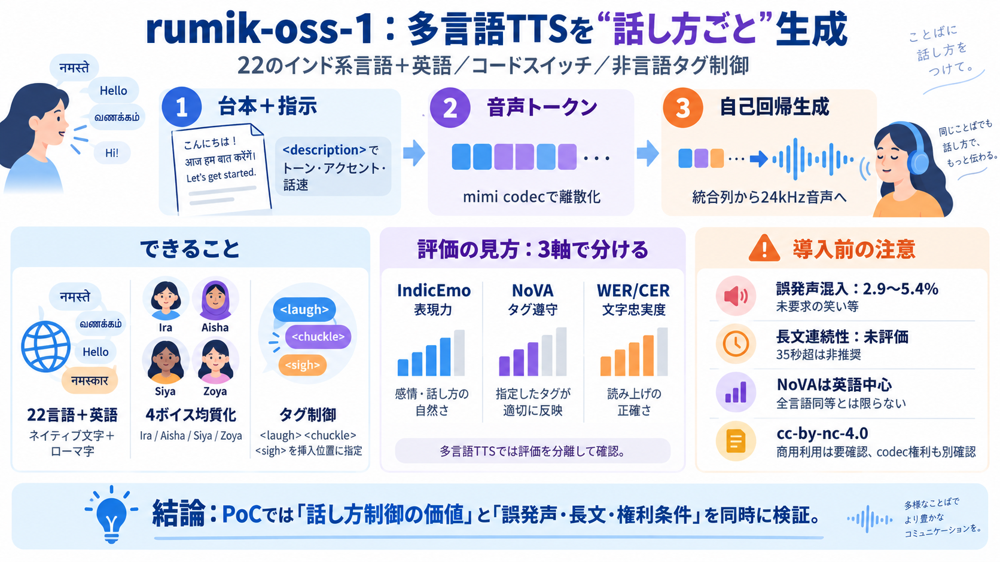

Rumik-OSS-1: Open-Source Indic TTS With Emotion (2026) | explainx.ai Blog | explainx.ai
`/v1/audio/speech` Hardware: the model card specifies an NVIDIA GPU with CUDA support as a requirement; no CPU inferenc…

Hugging Faceの3B規模多言語音声合成モデル。22のインド系言語＋英語に加え、コードスイッチや話し方タグで発声を制御します。
多言語TTSは「読める」だけだと用途が限られます。トーン・アクセント・話速に加えて、笑い/ため息などの非言語発声まで“文章中で”扱える必要があります。
テキスト条件付けと音声生成を、単一の自己回帰列に統合。mimi codecの離散化（コードブック）を使い、生成→復元（波形再構成）へ繋げます。
<description>で全体のトーン・アクセント・話速を指定し、インラインタグで笑い/チャックル/ため息を“挿入位置”に対応付けます。
<description="happy"> （happy）<laugh> / <chuckle><sigh> （ため息）日本語用語：話し方制御＝Speech style control
24kHzの音声を生成する、rumik aiの3B規模多言語TTS。22のインド系言語（ネイティブ文字＋ローマ字）と英語に対応します。
Ira / Aisha / Siya / Zoya の4話者を用意し、22言語すべてで“同程度の出来”を狙う設計。言語ごとの声質崩れを抑え、アプリ側の声選択負担を軽減します。
多言語インド系TTSで標準化が少ない問題意識のもと、表現力・タグ遵守・文字忠実度を分離して提示します。
<laugh>等は指定位置に挿入を狙う一方、未要求の発声混入が一定割合で起こり得ます（2.9〜5.4%）。またNoVA評価は英語中心で、全言語で同等の遵守が確立とは書かれていません。
生成は「テキスト（内容）」＋「話し方の指示（
<description>日本語用語：コードスイッチ＝Code-switching
学習は30秒までで、長文の連続性は評価されていません。35秒超は非推奨で、運用では分割生成や編集が必要になる可能性があります。
モデル本体は cc-by-nc-4.0（非商用）。商用プロダクトや有償の合成サービス、自社ホスティングで商用優位を狙う場合は別途許可が要る、とされています。
cc-by-nc-4.0強みは「多言語均質化」＋「コードスイッチ」＋「非言語タグ制御」を同時に狙う点。一方で、長文の連続性未評価・タグ誤発声・NoVAの評価偏り・非商用ライセンスは、PoCでは確認必須です。
`/v1/audio/speech` Hardware: the model card specifies an NVIDIA GPU with CUDA support as a requirement; no CPU inferenc…
benchmarks we evaluate expressive delivery, vocalization adherence, and transcription accuracy separately. indicEmo mea…
three automated judges rate anonymized recordings on a five-point rubric covering tone, dynamics, phrasing, and sustaine…
A key consideration in the task force deliberation has been to ensure consistency between performance and accuracy runs.…
Memory and throughput. On A100/H100-class hardware, peak GPU memory stabilised around 80 GB per device for gpt-oss-120B …